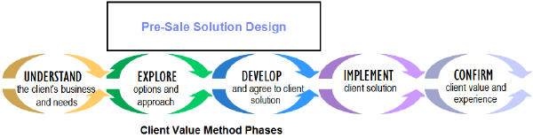

This practice uses tasks and activities that are tailored to the pre-sale context and which correspond to the
EXPLORE and DEVELOP phases of the Client Value Method (CVM). The purpose of the
first activity is to identify the key client requirements, develop a vision of the solution and assess the
probability of a successful project from a client and IBM point of view. The purpose of the second activity is to
jointly develop and propose a solution that provides value to both the client and IBM. The following illustrates the
relationship of CVM and this practice.

This practice is intended to support varied levels of elaboration necessary in a pre-sale context. It may also be
necessary to augment the practice for large, complex solutions. The following describes additional characteristics of
the practice.
-
Each work product goes through multiple elaborations -- by you or others before and after the solution is "sold".
-
Earlier versions of work products are useful in their own right. For example:
First use cases can be used to drive custom demo.
Services View of Architecture Overview Diagram used to confirm key functions
needed.
-
Includes multiple views (Architecture Overview Diagram), or for a specific audience (Component Model).
-
Allows for the “uneven” level of elaboration likely in pre-sale. What you need to know varies for different parts
of the solution.
-
Focuses on the level of design needed to ensure the solution will work, even if we are responsible for only a part.
-
Provides just enough detail to assure the client that requirements are understood, the solution will address them
and we can deliver.
Work products used are standard UMF work products, but contain additional guidance on how to reduce the level of
elaboration when appropriate in a pre-sale context. This practice may be incorporated in any pre-sale delivery
process where high level solution design for pre-sale is required.
|